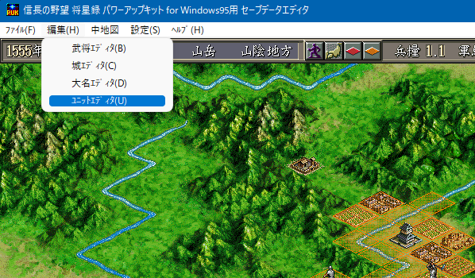
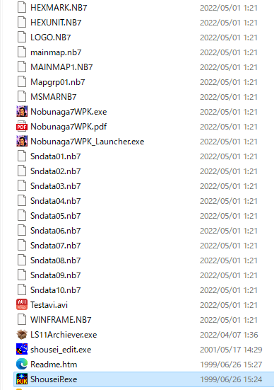

該当ページの一番下部にてダウンロード可能です。

C:\Users\%USERNAME%\Documents\Koei\35th\信長の野望・将星録 with パワーアップキット
あるいは、
C:\Users\%USERNAME%\Documents\Koei\Nobunaga7anniv\SAVEDATA
などのフォルダからご自身のセーブデータを探し出し、「将星録フォルダ」へとコピーしてください。